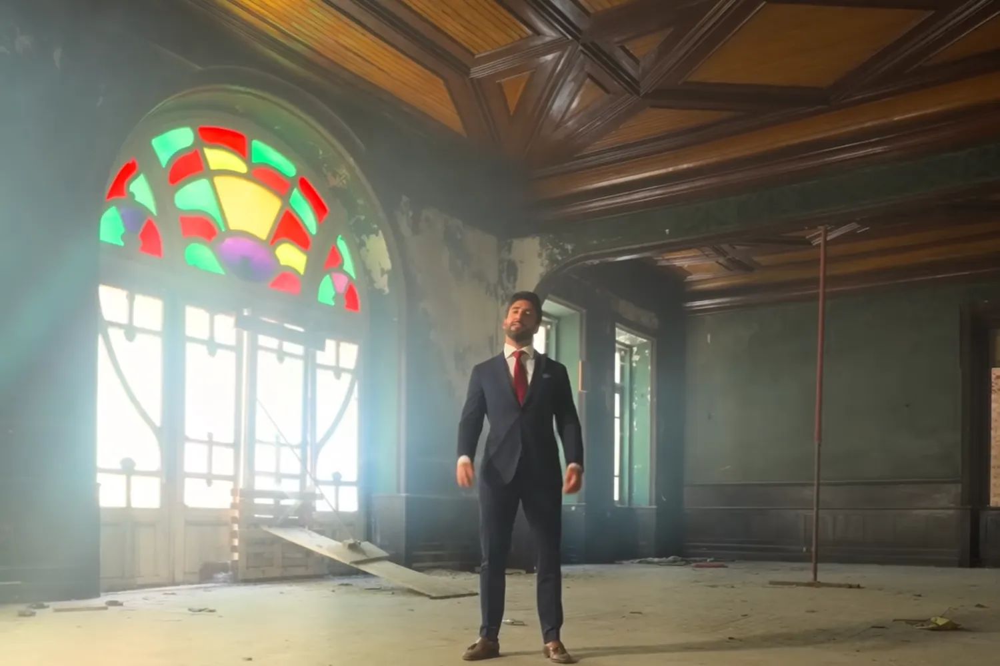
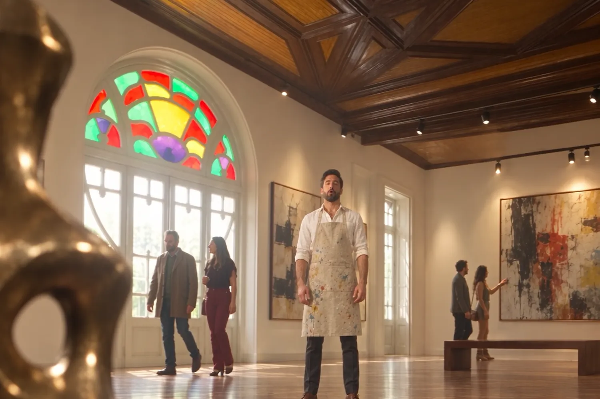
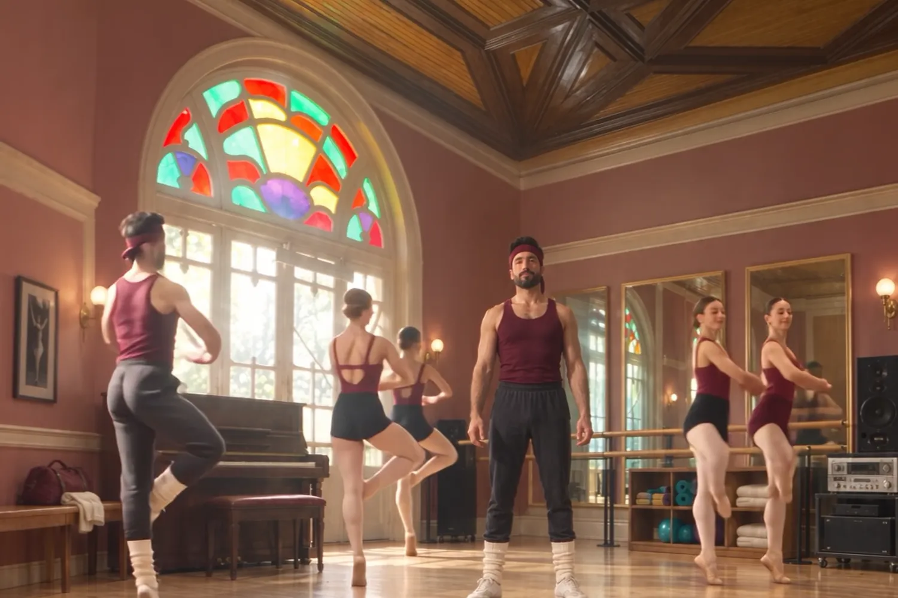
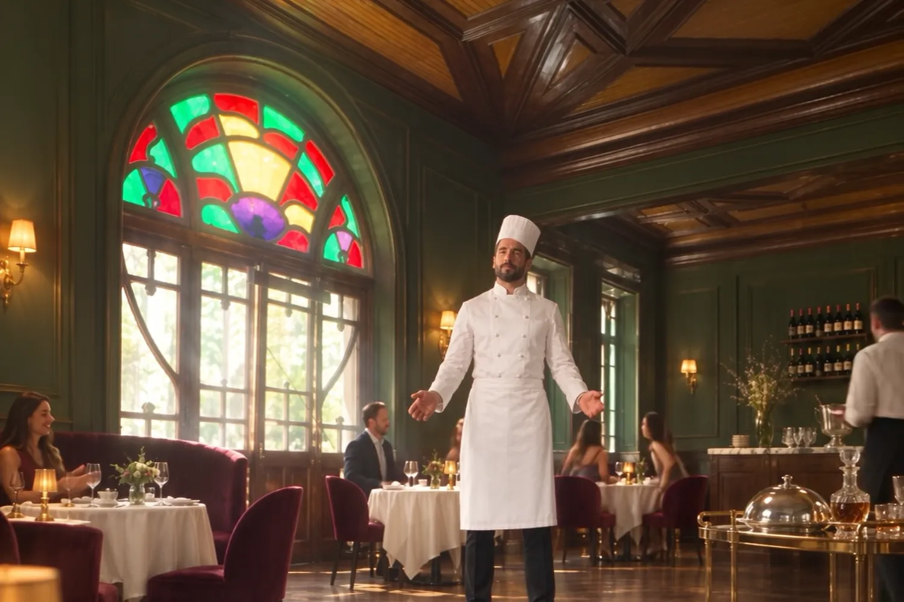
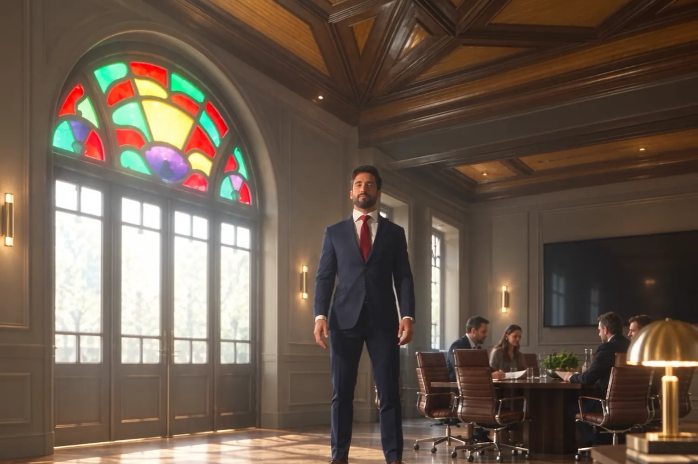

Captação
Um plano contínuo na sala do vitral, com a fala e o som originais, e imagens aéreas dos detalhes da fachada.
Caso real · Coimbra
Um filme vertical para apresentar um prédio histórico no centro de Coimbra. A mesma sala, filmada num só plano, ganha vida como galeria, escola de dança, restaurante, sala de reuniões e discoteca.
O trabalho
Uma sala vazia e por recuperar diz pouco a quem a vê. Neste filme, o consultor fala para a câmara num plano contínuo e, à medida que enumera as possibilidades, a sala e a roupa transformam-se. O vitral, o teto e o movimento da câmara mantêm-se: muda apenas o que o espaço poderia ser.
As versões transformadas da sala e da fachada são visualizações conceptuais criadas com inteligência artificial, não o estado atual do imóvel.
Como o construímos
Um plano contínuo na sala do vitral, com a fala e o som originais, e imagens aéreas dos detalhes da fachada.
Cada utilização mencionada aparece na própria sala, com ambiente, mobiliário, luz e roupa pensados para esse uso.
A arquitetura reconhecível mantém-se de versão para versão, para que a imaginação parta sempre do espaço real.
Uma sala, seis versões
O mesmo enquadramento em seis momentos do filme: a sala real e cinco utilizações imaginadas.





Dê a ver o potencial